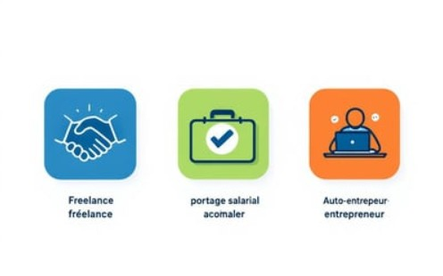

Mes Services

Soutien Logistique Intégré (SLI)
Optimisation des chaînes logistiques, gestion des flux et des stocks, intégration des systèmes de maintenance.

Maintenance Industrielle 4.0
Stratégies de maintenance préventive et corrective, analyse des risques et amélioration continue.

Formation et Conseil
Formations sur mesure en logistique, maintenance et gestion de projet pour vos équipes.

Types de Contrat
3 formules de collaboration possibles :
- En freelance à mi-temps (2 à 2,5 jours/semaine)
- En portage salarial
- En auto-entrepreneur